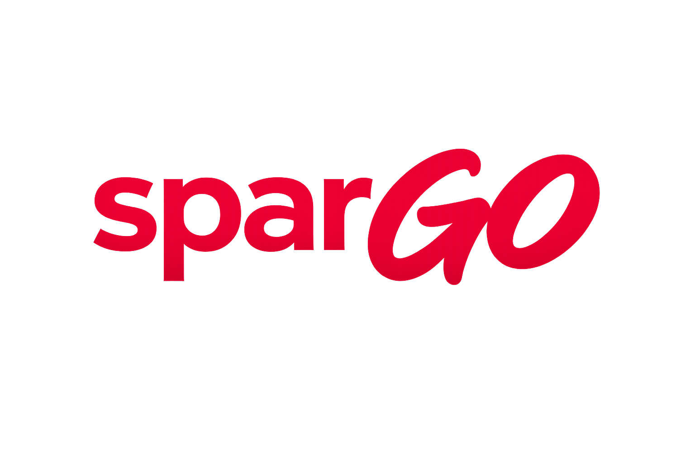

Nearby & Radius
Relevanz nach echtem Ort statt Zufall.
Stadt, Viertel und Radius steuern, was du wirklich sehen sollst. Direkt angelegte Business-Coupons bleiben oben. Gepruefte Drittquellen werden sauber ergaenzt.

sparGO bringt Nearby-Coupons, Stories, Wallet, Merklisten, verifizierte Business-Aktionen und serverseitig gepruefte Drittquellen in einen mobilen Ablauf, der direkt klar bleibt.
sparGO bleibt bewusst mobil gedacht: Nahbereich, Kartenlogik, Gutscheinaktivierung, Wallet, Stories, Bewertungen, Merklisten, Follow-Flow und serverseitig gepruefte oeffentliche Quellen greifen in einem einzigen, ruhigen Produkt zusammen.
Stadt, Viertel und Radius steuern, was du wirklich sehen sollst. Direkt angelegte Business-Coupons bleiben oben. Gepruefte Drittquellen werden sauber ergaenzt.
Gespeicherte und aktivierte Vorteile landen in einem klaren Wallet. Die Einloesung bleibt nachvollziehbar, schnell und auf dem aktuellen Geraet geschuetzt.
Stories zeigen, was gerade lohnt. Unternehmen mit aktiver Story werden sichtbar markiert und lassen sich direkt aus dem Feed heraus entdecken.
Lieblingsorte, Saves und Follow-Entscheidungen bauen deinen Feed weiter aus, statt ihn aufzublaehen. So wird die Auswahl mit der Zeit besser statt lauter.
Bewertungen gehoeren zum Ort, nicht zu irgendeinem losen Kommentarfeed. So entsteht Relevanz fuer Nutzer und Businesses im selben Produktfluss.
Freie Quellen werden zentral geprueft, gekennzeichnet, gecacht und regelmaessig neu bewertet. Dadurch bleibt der Nutzerfluss mobil leicht, waehrend die schwere Arbeit auf dem Server passiert.
Businesses arbeiten in sparGO nicht neben dem Nutzerprodukt, sondern mitten darin: Profil, Coupon-Studio, Story-Flow, Verifikation, QR-Einloesung und Dashboard bilden ein zusammenhaengendes System.
Bilder, Texte, Laufzeit, Regeln und Sichtbarkeit werden dort gepflegt, wo sie spaeter auch wirklich im Nutzerfluss auftauchen.
E-Mail-Domain, Website und weitere Zuordnungen sorgen dafuer, dass nicht irgendein Fremder ein Unternehmen uebernimmt.
Der Gutschein zeigt, das Business prueft, sparGO haelt den Status im System sauber zusammen.
Diese Seite erklaert sparGO, zeigt das Produkt sauber nach aussen und traegt Rechtliches sowie Geraetefreigaben. Das eigentliche Produkt bleibt dort, wo es hingehoert: in der mobilen App.
sparGO verbindet Nutzerkomfort mit klaren Schutzmechanismen: Business-Verifikation, Geraetefreigabe, serverseitige Coupon-Pruefung, Wallet-Schutz und ein nachvollziehbarer Produktzustand statt Wildwuchs.
Wenn ein Konto auf ein neues Geraet wechselt, wird der Vorgang per Mail bestaetigt. So bleibt klar, welches Geraet gerade aktiv sein darf.
Gerade dort, wo Einloesung und Pass sichtbar werden, ist der Schutz nicht nur Deko, sondern Teil der Produktlogik.
Wer ein Angebot sieht, soll sofort erkennen, ob es direkt aus sparGO kommt oder aus einer geprueften Drittquelle in den Flow uebernommen wurde.
Diese Seite buendelt die rechtlich relevanten Basisinformationen fuer den oeffentlichen Auftritt von sparGO. Wo echte Betreiberdaten im Projekt noch nicht hinterlegt sind, wird das offen markiert statt mit Fantasieangaben kaschiert.
sparGO verarbeitet Konto-, Profil-, Favoriten-, Wallet-, Bewertungs-, Story- und Businessdaten, damit Anmeldung, personalisierte Gutscheine, Einloesungen, Bewertungen und Business-Funktionen sauber funktionieren.
Standortdaten werden nur nach ausdruecklicher Freigabe verwendet. Wenn Stadt oder Radius manuell gesetzt werden, nutzt sparGO diese Angaben statt einer automatischen Abfrage.
Oeffentliche Coupons stammen aus frei sichtbaren Quellen, werden als Drittquelle markiert und serverseitig regelmaessig geprueft, bevor sie erneut in den sichtbaren Flow gelangen.
Technisch nutzt sparGO Firebase Authentication, Cloud Firestore, Cloud Storage, Cloud Functions und Google Maps Platform fuer Karten-, Geocoding- und Places-Daten.
Direkte Coupons aus sparGO und gepruefte oeffentliche Drittquellen laufen im selben Produktfluss, bleiben aber klar gekennzeichnet.
Die tatsaechliche Einloesbarkeit, Laufzeit und Verfuegbarkeit eines Angebots richtet sich immer nach dem jeweiligen Unternehmen oder der extern veroeffentlichten Quelle.
Business-Konten sollen nur von Personen verwendet werden, die zum Unternehmen gehoeren. sparGO verknuepft Registrierungen deshalb mit Website-Domain, Business-E-Mail und weiteren Verifikationssignalen.
sparGO baut technisch unter anderem auf Flutter, Firebase, Google Maps Platform und weiteren Bibliotheken auf. Die mobile App fuehrt die zugehoerigen Lizenzhinweise fuer Open-Source- Komponenten zusaetzlich direkt im Produkt.